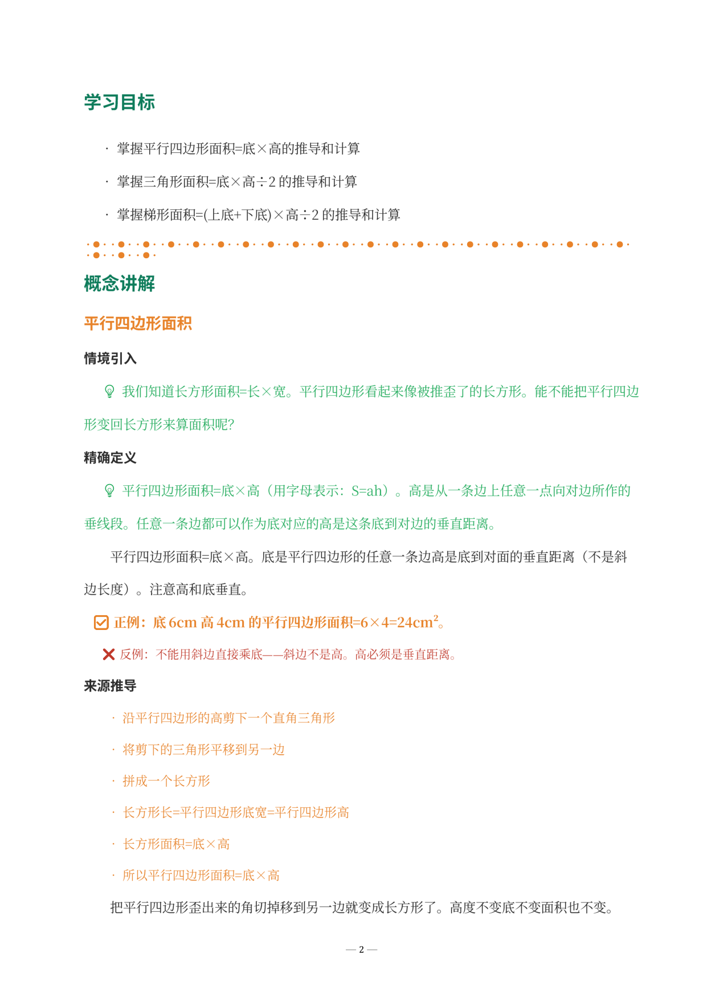
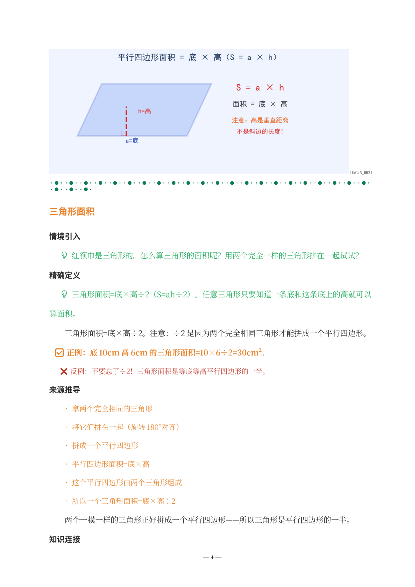
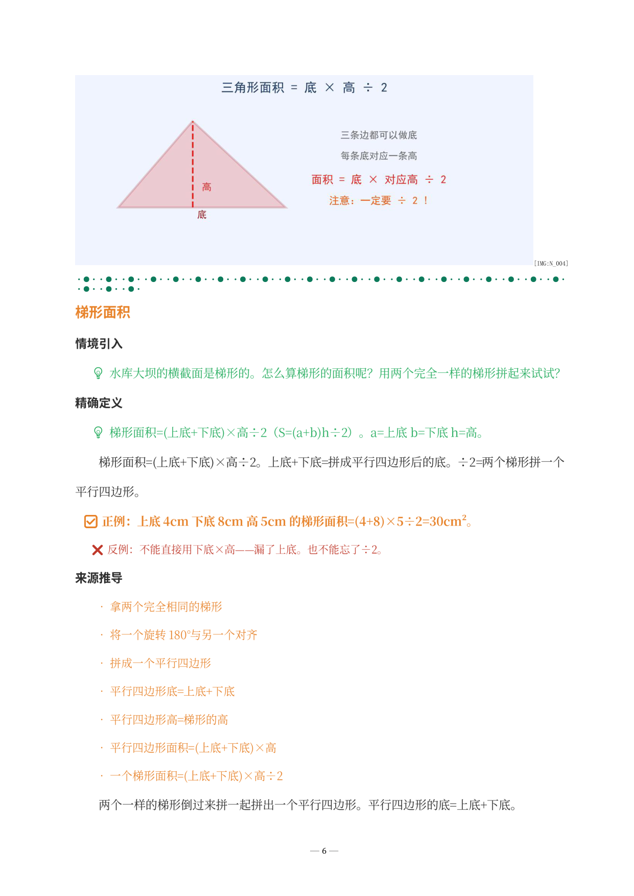
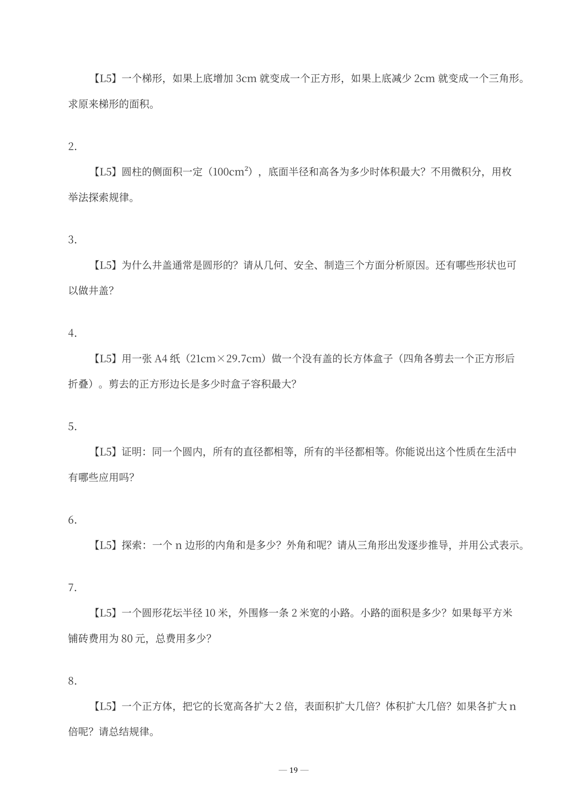

以下是《多边形面积·学生版》DOCX 实际截图。割补法与倍拼法统领全局——三种图形面积公式统一于"转化为已知图形"的思想。所见即所得——您收到的文件排版、公式、题目与此完全一致。

↑ 学习目标与平行四边形面积推导——割补法转化为长方形

↑ 三角形面积——底×高÷2，两个全等三角形拼成平行四边形

↑ 梯形面积——(上底+下底)×高÷2，两个全等梯形拼成平行四边形

↑ L5 探究拓展——几何变换、最优解与井盖为什么是圆的